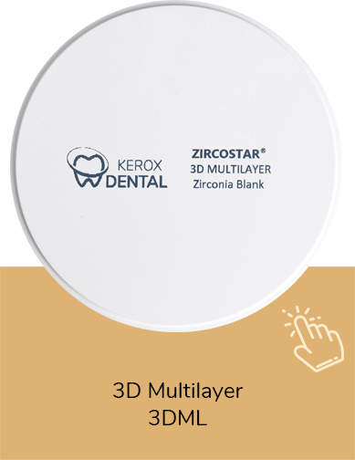
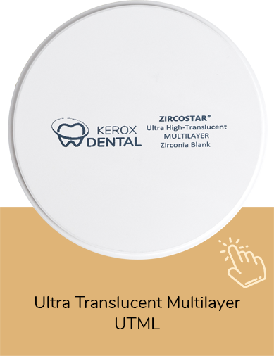
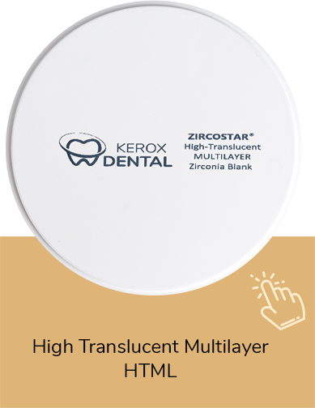

3D Multilayer (3DML)
Dégradé de translucidité sur l’épaisseur — monolithique ant./post., inlays/onlays, bridges multi-unités.
Demander un devis professionnel Fiche technique complète →Kerox ZircoStar® · Zircone CAD/CAM
Une gamme de zircones dentaires européennes conçue pour répondre à différents besoins de laboratoire : résistance mécanique, esthétique, translucidité et restaurations CAD/CAM. Kerox Dental propose plusieurs familles ZircoStar® adaptées aux indications de laboratoire : HS, HT, UHT, UTML, HTML et 3D Multilayer. Le choix de la référence dépend du type de restauration, du niveau esthétique recherché, de la résistance souhaitée et du protocole de travail du laboratoire.

Propriétés mécaniques et esthétiques à mettre en regard des indications et du protocole du laboratoire.
Niveaux de résistance mécanique variables selon la référence ; indications et limites à confirmer via la documentation fournisseur et votre protocole.
Profils de translucidité variables selon la référence, pour des finitions à adapter à chaque cas.
Comportement à l’usinage à valider selon votre matériel, vos paramètres et les recommandations fournisseur.
Compatibilité avec les flux numériques existants à confirmer selon votre parc machines et la référence concernée.
Six familles Kerox Zircostar® couvrent un large spectre d’indications : à préciser avec votre interlocuteur selon stock et références disponibles.
SHAMED vous accompagne pour le choix de la gamme ZircoStar® adaptée à votre indication, avec confirmation de disponibilité et devis professionnel. Documents techniques et certificats disponibles selon les références fournisseur.
Dégradé de translucidité sur l’épaisseur — monolithique ant./post., inlays/onlays, bridges multi-unités.
Demander un devis professionnel Fiche technique complète →Équilibre esthétique / résistance — full contour, couronnes et bridges longue portée.
Demander un devis professionnel Fiche technique complète →Indications à forte exigence esthétique en zone visible — facettes, inlays/onlays, couronnes et bridges courts (max 3 unités), selon documentation.
Demander un devis professionnel Fiche technique complète →Bloc monolithique pré-teinté — armatures, full contour ant./post., bridges selon protocole.
Demander un devis professionnel Fiche technique complète →Très haute densité — armatures, piliers implantaires, bridges monolithiques longue portée.
Demander un devis professionnel Fiche technique complète →Monolithique pur — restaurations antérieures à forte exigence esthétique.
Demander un devis professionnel Fiche technique complète →SHAMED accompagne les laboratoires, cabinets et centres CAD/CAM au Maroc pour le choix des références ZircoStar® adaptées à votre activité.
Production série, contrôle qualité et délais pour vos commandes récurrentes.
Solutions adaptées aux restaurations collées et aux protocoles cliniques coordonnés avec le labo.
Blocs proposés selon références disponibles ; dimensions et compatibilité machines à confirmer avec SHAMED.
Des cas réels et exemples de travaux seront ajoutés progressivement avec l’accord des laboratoires partenaires.


Notre équipe vous répond sous 24h ouvrées (indicatif). Les clients professionnels commandent via l’espace client.